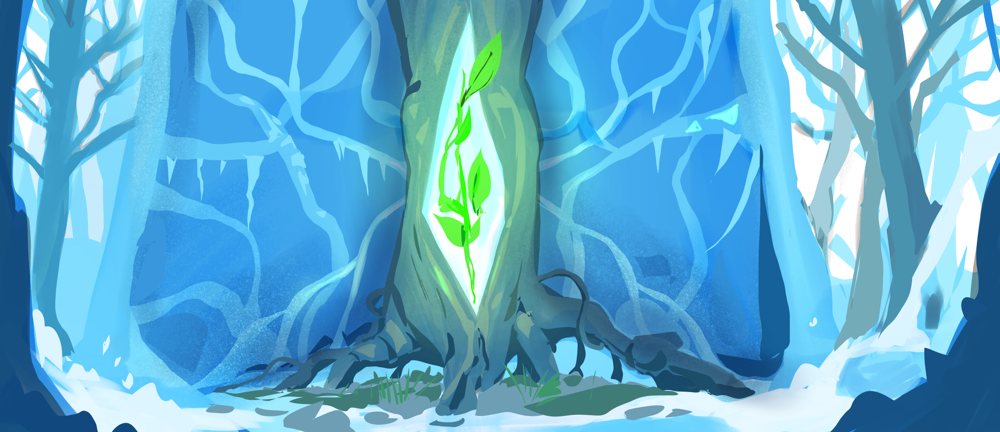
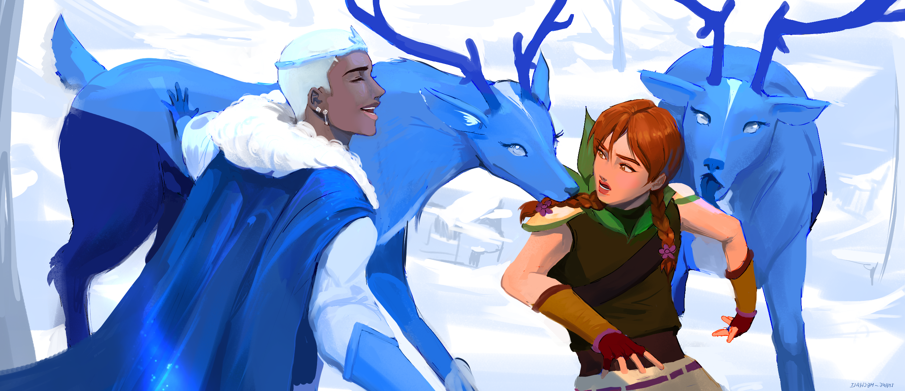
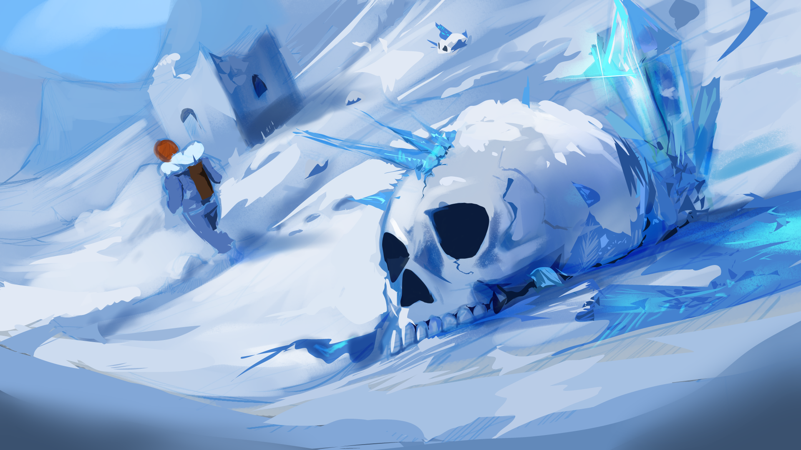
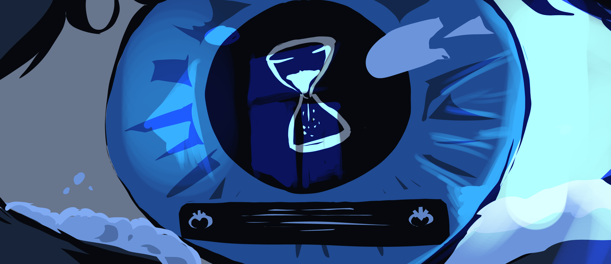

Détails du projet
Ce projet est un travail que je suis en train de réaliser avec une équipe de 4 personnes.On dit que tous les exploits viennent d'une idée, et c'est vrai, mais une idée sans action ne vaut rien, c'est pour ça que j'ai décidé de faire de cette idée une réalité.
Accroche
Dans un univers glacé méconnu par la plupart, un royaume sous une
ancienne malédiction réside sous les terres froides pour tenter
d'échapper à la neige, qui brille tellement qu'elle aveugle les gens
.
Trouver le monde vert à partir des souvenirs
flous de leur roi semble être leur seule source de libération.
Dans un autre univers couvert de verdure et où le froid est beaucoup
plus rare, une archère nommée Eva est guidée à son insu par une
entité particulière vers un portail qui l'envoie vers... des terres
plus froides.
que pensez-vous qu'il se passe lorsque un roi et une
femme, deux individus déterminés, choisissent de collaborer pour
arriver à un endroit similaire?





The Frozen King – Concept
.png)
Ce concept marque le début du projet Frozen King. À ce stade, l'objectif était d'explorer la silhouette et la présence imposante du personnage. Le design se concentrait sur la transmission de la puissance, de l'humilité et de l'autorité.
Ce stage a permis de définir la direction artistique du projet et de guider la phase de modélisation suivante.
.png)